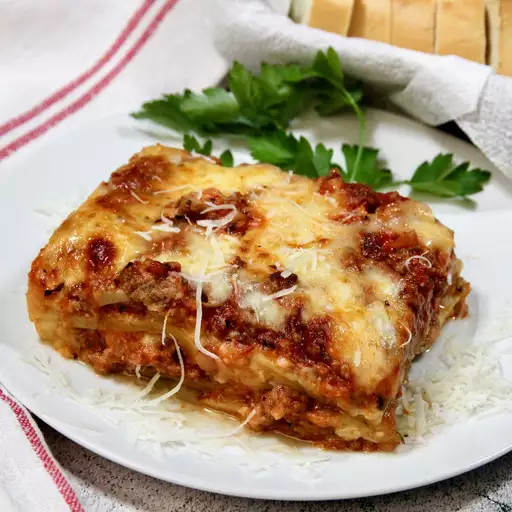

Lasagna

Descripcion
La lasaña es un plato de pasta al horno originario de Italia.
Se compone de capas de pasta intercaladas con salsa de carne, bechamel y queso.
La lasaña se suele hornear hasta que esté dorada y burbujeante.
Ingredientes:
- 1 paquete de pasta para lasaña (aproximadamente 12 láminas)
- 500 g de carne molida de res
- 1 cebolla picada
- 2 dientes de ajo picados
- 1 lata (400 g) de tomates pelados
- 1 taza de salsa de tomate
- 1/2 taza de vino tinto (opcional)
- 1 cucharadita de orégano seco
- Sal y pimienta al gusto
- 500 ml de salsa bechamel
- 200 g de queso mozzarella rallado
- 50 g de queso parmesano rallado
Preparacion:
- Precalentar el horno a 180°C.
- En una sartén grande, dorar la carne molida con la cebolla y el ajo picados. Sazonar con sal y pimienta al gusto.
- Agregar los tomates pelados, la salsa de tomate, el vino tinto (si se usa), el orégano y la albahaca. Cocinar a fuego lento durante 15 minutos, hasta que la salsa espese.
- Cocinar la pasta para lasaña según las instrucciones del paquete.
- En una fuente para horno, colocar una capa de salsa de carne. Luego, cubrir con una capa de pasta para lasaña y una capa de salsa bechamel. Repetir las capas hasta terminar con una capa de salsa bechamel.
- Espolvorear con el queso mozzarella y el queso parmesano rallado.
- Hornear durante 30 minutos, hasta que la superficie esté dorada y burbujeante.
- Dejar reposar durante 10 minutos antes de servir.
Back